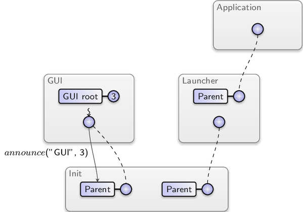
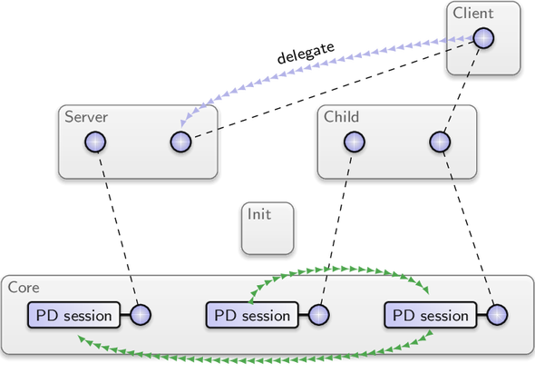
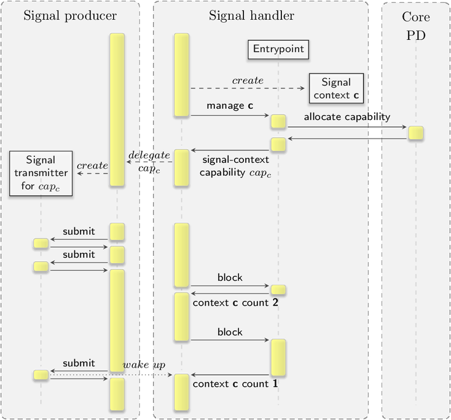

Architecture
Contemporary operating systems are immensely complex to accommodate a
large variety of applications on an ever diversifying spectrum of hardware
platforms. Among the functionalities provided by a commodity operating system
are device drivers, protocol stacks such as file systems and network
protocols, the management of hardware resources, as well as the provisioning
of security functions. The latter category is meant for protecting the
confidentiality and integrity of information and the lifelines of critical
functionality. For assessing the effectiveness of such a security function,
two questions must be considered. First, what is the potential attack surface
of the function? The answer to this question yields an assessment about the
likelihood of a breach. Naturally, if there is a large number of potential
attack vectors, the security function is at high risk. The second question is:
What is the reach of a defect? If the compromised function has unlimited
access to all information processed on the system, the privacy of all users
may be affected. If the function is able to permanently install software, the
system may become prone to back doors.
Today's widely deployed operating systems do not isolate security-critical
functions from the rest of the operating system. In contrary, they are
co-located with most other operating-system functionality in a single
high-complexity kernel. Thereby, those functions are exposed to the other
parts of the operating system. The likelihood of a security breach is as
high as the likelihood of bugs in an overly complex kernel. In other words:
It is certain. Moreover, once an in-kernel function has been compromised, the
defect has unlimited reach throughout the system.
The Genode architecture was designed to give more assuring answers to the two
questions stated. Each piece of functionality should be exposed to only those
parts of the system, on which it ultimately depends. But it remains hidden
from all unrelated parts. This minimizes the attack surface on individual
security functions and thereby reduces the likelihood for a security breach.
In the event that one part of the system gets compromised, the scope of the
defect is limited to the particular fragment and its dependent parts.
Unrelated functionalities remain unaffected. To realize this idea, Genode
composes the system out of many components that interact with each other. Each
component serves a specific role and uses well-defined interfaces to interact
with its peers. For example, a network driver accesses a physical network card
and provides a bidirectional stream of network packets to another component,
which, in turn, may process the packets using a TCP/IP stack and a network
application. Even though the network driver and the TCP/IP stack cooperate
when processing network packets, they are living in separate protection
domains. So a bug in one component cannot observe or corrupt the internal
state of another.
Such a component-based architecture, however, raises a number of questions,
which are addressed throughout this chapter.
Section Capability-based security explains how components can cooperate
without inherently trusting each other.
Section Recursive system structure answers the questions of who defines the
relationship between components and how components become acquainted with each
other.
An operating system ultimately acts on physical hardware resources such
as memory, CPUs, and peripheral devices.
Section Core - the root of the component tree describes how such resources
are made available to components.
Section Component creation answers the question of how a new component comes
to life.
The variety of relationships between components and their respective
interfaces call for different communication primitives. Section
Inter-component communication introduces Genode's inter-component communication
mechanisms in detail.
Capability-based security
This section introduces the nomenclature and the general model of Genode's
capability-based security concept. The Genode OS framework is not tied to one
kernel but supports a variety of kernels as base platforms. On each of those
base platforms, Genode uses different kernel mechanisms to implement the
general model as closely as possible. Note however that not all kernels
satisfy the requirements that are needed to implement the model securely. For
assessing the security of a Genode-based system, the respective
platform-specific implementation must be considered. Sections
Execution on bare hardware (base-hw) and
Execution on the NOVA microhypervisor (base-nova)
provide details for selected kernels.
Capability spaces, object identities, and RPC objects
Each component lives inside a protection domain that provides an isolated
execution environment.
Genode provides an object-oriented way of letting components interact with
each other. Analogously to object-oriented programming languages, which have
the notion of objects and pointers to objects, Genode introduces the notion of
RPC objects and capabilities to RPC objects.
An RPC object provides a remote-procedure call (RPC) interface. Similar to a
regular object, an RPC object can be constructed and accessed from within the
same program. But in contrast to a regular object, it can also be called from
the outside of the component. What a pointer is to a regular object, a
capability is to an RPC object. It is a token that unambiguously refers to
an RPC object. In the following, we represent an RPC object as follows.
The circle represents the capability associated with the RPC object. Like a
pointer to an object, that can be used to call a function of the pointed-to
object, a capability can be used to call functions of its corresponding RPC
object. However, there are two important differences between a capability and
a pointer. First, in contrast to a pointer that can be created out of thin air
(e.g., by casting an arbitrary number to a pointer), a capability cannot be
created without an RPC object. At the creation time of an RPC object, Genode
creates a so-called object identity that represents the RPC object in the
kernel. Figure img/object_identity illustrates the relationship of an
RPC object and its object identity.
|
|
|
Relationship between an RPC object and its corresponding object identity.
|
For each protection domain, the kernel maintains a so-called capability space,
which is a name space that is local to the protection domain. At the creation time of
an RPC object, the kernel creates a corresponding object identity and lets a
slot in the protection domain's capability space refer to the RPC object's
identity. From the component's point of view, the RPC object A has the name 3.
When interacting with the kernel, the component can use this number to refer
to the RPC object A.
Delegation of authority and ownership
|
|
|
The transitive delegation of a capability from one protection domain to others.
|
The second difference between a pointer and a capability is that a capability
can be passed to different components without losing its meaning. The transfer
of a capability from one protection domain to another delegates the authority
to use the capability to the receiving protection domain.
This operation is called delegation and can be performed only by the kernel.
Note that the originator of the delegation does not diminish its authority by
delegating a capability. It merely shares its authority with the receiving
protection domain.
There is no superficial notion of access rights associated with a capability.
The possession of a capability ultimately enables a protection domain to use
it and to delegate it further. A capability should hence be understood as an
access right.
Figure img/delegation shows the
delegation of the RPC object's capability to a second protection domain
and a further delegation of the capability from the second to a third
protection domain.
Whenever the kernel delegates a capability from one to another protection domain,
it inserts a reference to the RPC object's identity into a free slot of the
target's capability space. Within protection domain 2 shown in Figure
img/delegation, the RPC object can
be referred to by the number 5. Within protection domain 3, the same RPC
object is known as 2.
Note that the capability delegation does not hand over the ownership of the
object identity to the target protection domain. The ownership is always
retained by the protection domain that created the RPC object.
Only the owner of an RPC object is able to destroy it along with the
corresponding object identity. Upon destruction of an object identity, the
kernel removes all references to the vanishing object identity from all
capability spaces. This effectively renders the RPC object inaccessible for
all protection domains. Once the object identity for an RPC object is gone,
the owner can destruct the actual RPC object.
Capability invocation
Capabilities enable components to call methods of RPC objects
provided by different protection domains. A component that uses
an RPC object plays the role of a client whereas a component that
owns the RPC object acts in the role of a server. The interplay between
client and server is very similar to a situation where a program calls
a local function. The caller deposits the function arguments at a place where
the callee will be able to pick them up and then passes control to the
callee. When the callee takes over control, it obtains the function
arguments, executes the function, copies the results to a place where the
caller can pick them up, and finally hands back the control to the caller.
In contrast to a program-local function call, however, client and server
are different threads in their respective protection domains. The thread
at the server side is called entrypoint denoting the fact that it
becomes active only when a call from a client enters the protection domain
or when an asynchronous notification comes in. Each component has at least one
initial entrypoint, which is created as part of the component's execution
environment.
The wiggly arrow denotes that the entrypoint is a thread. Besides being a
thread that waits for incoming requests, the entrypoint is responsible for
maintaining the association between RPC objects and their corresponding
capabilities. The previous figures illustrated this association with the link
between the RPC object and its capability. In order to become callable
from the outside, an RPC object must be associated with a concrete entrypoint.
This operation results in the creation of the object's identity and the
corresponding capability. During the lifetime of the object identity, the
entrypoint maintains the association between the RPC object and its capability in
a data structure called object pool, which allows for looking up the
matching RPC object for a given capability. Figure img/object_pool shows a
scenario where two RPC objects are associated with one entrypoint in the
protection domain of a server. The capability for the RPC object A has been
delegated to a client.
|
|
|
The RPC object A and B are associated with the server's entrypoint. A client has a capability for A but not for B. For brevity, the kernel-protected object identities are not depicted. Instead, the dashed line between the capabilities shows that both capabilities refer to the same object identity.
|
If a protection domain is in possession of a capability, each thread executed
within this protection domain can issue a call to a member function of the RPC
object that is referred to by the capability. Because this is not a normal
function call but the invocation of an object located in a different
protection domain, this operation has to be provided by the kernel. Figure
img/capability_call illustrates the interaction of the client, the kernel,
and the server. The kernel operation takes the client-local name of the
invoked capability, the opcode of the called function, and the function
arguments as parameters. Upon entering the kernel, the client's thread is
blocked until it receives a response. The operation of the kernel is
represented by the dotted line.
The kernel uses the supplied local name as an
index into the client's capability space to look up the object identity, to
which the capability refers. Given the object identity, the kernel is able to
determine the protection domain and the corresponding entrypoint that is
associated with the object identity and wakes
up the entrypoint's thread with information about the incoming request.
Among this information is the server-local name of the capability that was
invoked. Note that the kernel has translated the client-local name
to the corresponding server-local name. The capability name spaces of client and
server are entirely different. The entrypoint uses this number as a key into
its object pool to find the locally implemented RPC object A that belongs to
the invoked capability. It then performs a method call of the so-called
dispatch function on the RPC object. The dispatch function maps the supplied
function opcode to the matching member function and calls this function
with the request arguments.

|
|
Control flow between client and server when the client calls a method of an RPC object.
|
The member function may produce function results. Once the RPC object's member
function returns, the entrypoint thread passes the function results to the
kernel by performing the kernel's reply operation. At this point, the
server's entrypoint becomes ready for the next request. The kernel, in turn,
passes the function results as return values of the original call operation to
the client and wakes up the client thread.
Capability delegation through capability invocation
Section Delegation of authority and ownership explained that capabilities
can be delegated from one protection domain to another via a kernel operation.
But it left open the question of how this procedure works. The answer is the use
of capabilities as RPC message payload. Similar to how a caller of a regular
function can pass a pointer as an argument, a client can pass a capability as
an argument to an RPC call. In fact, passing capabilities as RPC arguments or
results is synonymous to delegating authority between components.
If the kernel encounters a capability as an argument of a call operation, it
performs the steps illustrated in Figure img/capability_argument.
The local names are denoted as $cap$, e.g., $cap_{arg}$
is the local name of the object identity at the client side, and
$cap_{translated}$ is the local name of the same object identity at the
server side.

|
|
Procedure of delegating a capability specified as RPC argument from a client to a server.
|
-
The kernel looks up the object identity in the capability space of the
client. This lookup may fail if the client specified a number of an empty
slot of its capability space. Only if the lookup succeeds is the kernel able
to obtain the object identity referred to by the argument. Note that under
no circumstances can the client refer to object identities, for which it
has no authority because it can merely specify the object identities
reachable through its capability space. For all non-empty slots of its
capability space, the protection domain was authorized to use their
referenced object identities by the means of prior delegations.
If the lookup fails, the translation results in an invalid capability
passed to the server.
-
Given the object identity of the argument, the kernel searches the server's
capability space for a slot that refers to the object identity. Note that
the term "search" does not necessarily refer to an expensive linear search.
The efficiency of the operation largely depends on the kernel implementation.
-
If the server already possesses a capability to the object identity, the
kernel translates the argument to the server-local name when passing
it as part of the request to the server. If the server does not yet possess
a capability to the argument, the kernel installs a new entry into the
server's capability space. The new entry refers to the object identity of
the argument. At this point, the authority over the object identity has been
delegated from the client to the server.
-
The kernel passes the translated or just-created local name of the argument
as part of the request to the server.
Even though the above description covered the delegation of a single
capability specified as argument, it is possible to delegate more than one
capability with a single RPC call.
Analogously to how capabilities can be delegated from a client to a server as
arguments of an RPC call, capabilities can be delegated in the other direction
as part of the reply of an RPC call. The procedure in the kernel is the same
in both cases.
Recursive system structure
The previous section introduced capability delegation as the fundamental
mechanism to share authority over RPC objects between protection domains. But
in the given examples, the client was already in possession of a capability to
the server's RPC object. This raises the question of how do clients get
acquainted to servers?
Component ownership
In a Genode system, each component (except for the very first component called
core) has a parent, which owns the component. The ownership relation between
a parent and a child is two-fold.
On the one hand, ownership stands for responsibility.
Each component requires physical resources such as the memory
or in-kernel data structures that represent the component in the
kernel.
The parent is responsible for providing a budget of those physical resources to
the child at the child's creation time but also during the child's entire
lifetime.
As the parent has to assign a fraction of its own physical resources to its
children, it is the parent's natural interest to maintain the balance of
the physical resources split between itself and each of its children.
Besides being the provider of resources, the parent defines all aspects of the
child's execution and serves as the child's primary point of contact for
seeking acquaintances with other components.
|
|
|
Initial relationship between a parent and a newly created child.
|
On the other hand, ownership stands for control. Because the parent has
created its children out of its own resources, it is in the position to
exercise ultimate power over its children. This includes the decision to
destruct a child at any time in order to regain the resources that were assigned
to the child. But it is also in control over the relationships of the child
with other components known to the parent.
Each new component is created as an empty protection domain. It is up to the
parent to populate the protection domain with code and data, and to create a
thread that executes the code within the protection domain. At creation time,
the parent installs a single capability called parent capability into the
new protection domain. The parent capability enables the child to perform RPC
calls to the parent. The child is unaware of anything else that exists in the
Genode system. It does not even know its own identity nor the identity of its
parent. All it can do is issue calls to its parent using the parent
capability. Figure img/parent_capability depicts the situation right after
the creation of a child component. A thread in the parent component created a
new protection domain and a thread residing in the protection domain. It also
installed the parent capability referring to an RPC object provided by the
parent. To provide the RPC object, the parent has to maintain an entrypoint.
For brevity, entrypoints are not depicted in this and the following figures.
Section Component creation covers the procedure of creating a component in
detail.
The ownership relation between parent and child implies that each component
has to inherently trust its parent. From a child's perspective, its parent
is as powerful as the kernel. Whereas the child has to trust its parent,
a parent does not necessarily need to trust its children.
Tree of components
The parent-child relationship is not limited to a single level. Child
components are free to use their resources to create further children, thereby
forming a tree of components. Figure img/recursive_structure shows an
example scenario. The init component creates subsystems according
to its configuration. In the example, it created two children, namely
a GUI and a launcher. The latter allows the user to interactively create
further subsystems. In the example, launcher was used to start an application.
|
|
|
Example of a tree of components. The red arrow represents the ownership relation.
|
At each position in the tree, the parent-child interface is the same. The
position of a component within the tree is just a matter of composition. For
example, by a mere configuration change of init, the application could be
started directly by the init component and would thereby not be subjected to
the launcher.
Services and sessions
The primary purpose of the parent interface is the establishment
of communication channels between components. Any component can inform
its parent about a service that it provides. In order to provide a service,
a component needs to create an RPC object implementing the so-called
root interface. The root interface offers functions for creating
and destroying sessions of the service. Figure img/announce shows a
scenario where the GUI component announces its service to the init component.
The announce function takes the service name and the capability for the
service's root interface as arguments. Thereby, the root capability is
delegated from the GUI to init.
|

|
|
The GUI component announces its service to its parent using the parent interface.
|
It is up to the parent to decide what to do with the announced information.
The parent may ignore the announcement or remember that the child "GUI"
provides a service "GUI". A component can announce any number of services via
subsequent announce calls.
|
|
|
The application requests a GUI session using the parent interface.
|
The counterpart of the service announcement is the creation of a session by
a client by issuing a session request to its parent. Figure
img/session_request shows the scenario where the application requests a
"GUI" session. Along with the session call, the client specifies the
type of the service and a number of session arguments. The session arguments
enable the client to inform the server about various properties of the
desired session. In the example, the client informs the server that
the client's window should be
labeled with the name "browser". As a result of the session request, the
client expects to obtain a capability to an RPC object that implements
the session interface of the requested service. Such a capability is called
session capability.
When the parent receives a session request from a child, it is free to take
a policy decision on how to respond to the request. This decision is closely
related to the management of resources described in Section
Trading memory between clients and servers.
There are the following options.
- Parent denies the service
-
The parent may deny the request and thereby prevent the child from using
a particular service.
- Parent provides the service
-
The parent could decide
to implement the requested service by itself by handing out a session
capability for a locally implemented RPC object to the child.
- Server is another child
-
If the parent has received an announcement of the service from another
child, it may decide to direct the session request to the other child.
- Forward to grandparent
-
The parent may decide to request a session in the name of its child from
its own parent.
Figure img/session_request illustrates the latter option where the
launcher responds to the application's session request by
issuing a session request to its parent, the init component. Note that by
requesting a session in the name of its child, the launcher is able to
modify the session arguments according to its policy. In the example,
the launcher imposes the use of a different label to the session. When
init receives the session request from the launcher, it is up to init
to take a policy decision with the same principle options. In fact, each
component that sits in between the client and the server along the branches
of the ownership tree can impose its policy onto sessions. The routing of the
session request and the final session arguments as received by the server are
the result of the successive application of all policies along the route.
Because the GUI announced its "GUI" service beforehand, init is in possession
of the root capability, which enables it to create and destroy GUI
sessions. It decides to respond to the launcher's session request by
triggering the GUI-session creation at the GUI component's root interface.
The GUI component responds to this request with the creation of a new GUI
session and attaches the received session arguments to the new session.
The accumulated session policy is thereby tied to the session's RPC object.
The RPC object is accompanied with its corresponding session capability,
which is delegated along the entire call chain up to the originator of the
session request (Section Delegation of authority and ownership). Once the
application's session request returns, the application can interact directly
with the GUI session using the session capability.
|
|
|
Session creation at the server.
|
The differentiation between session creation and session use aligns two
seemingly conflicting goals with each other, namely efficiency and the
application of the security policies by potentially many components.
All components on the route between client and server are involved
in the creation of the session and can thereby impose their policies on the
session. Once established, the direct communication channel
between client and server via the session capability allows for the efficient
interaction between the two components. For the actual use of the session, the
intermediate components are not on the performance-critical path.
Client-server relationship
Whereas the role of a component as a child is dictated by the strict
ownership relation that implies that the child has to ultimately trust
its parent, the role of a component as client or server is more diverse.
In its role of a client that obtained a session capability as result of a
session request from its parent, a component is unaware of the real identity
of the server. It is unable to judge the trustworthiness of the server.
However, it obtained the session from its parent, which the client ultimately
trusts. Whichever session capability was handed out by the parent, the client
is not in the position to question the parent's decision.
Even though the integrity of the session capability can be taken for
granted, the client does not need to trust the server in the same way as it
trusts its parent. By invoking the capability, the client is in full control
over the information it reveals to the server in the form of RPC arguments.
The confidentiality and integrity of its internal state is protected.
Furthermore, the
invocation of a capability cannot have side effects on the client's protection
domain other than the retrieval of RPC results. So the integrity of the
client's internal state is protected. However, when invoking a capability, the
client hands over the flow of execution to the server. The client is blocked
until the server responds to the request. A misbehaving server may never
respond and thereby block the client infinitely. Therefore, with respect to
the liveliness of the client, the client has to trust the server. To empathize
with the role of a component as a client, a capability invocation can be
compared to the call of a function of an opaque 3rd-party library. When
calling such a library function, the caller can never be certain to regain
control. It just expects that a function returns at some point. However, in
contrast to a call of a library function, a capability invocation does not put
the integrity and confidentiality of the client's internal state at risk.
Servers do not trust their clients
When exercising the role of a server, a component should generally not trust
its clients. On the contrary, from the server's perspective, clients should be
expected to misbehave. This has two practical implications. First, a server is
responsible for validating the arguments of incoming RPC requests. Second, a
server should never make itself dependent on the good will of its clients.
For example, a server should generally not invoke a capability obtained
from one of its clients. A malicious client could have delegated a
capability to a non-responding RPC object, which may block the server
forever when invoked and thereby make the server unavailable for all
clients. As another example, the server must always be in control
over the physical memory resources used for a shared-memory interface between
itself and its clients. Otherwise, if a client was in control over the
used memory, it could revoke the memory from the server at any time, possibly
triggering a fault at the server. The establishment of shared memory is
described in detail in Section Shared memory.
Similarly to the role as client, the internal state of a server is protected
from its clients with respect to integrity and confidentiality.
In contrast to a client, however, the liveliness of a server is protected as
well. A server never needs to wait for any response from a client.
By responding to an RPC request, the server does immediately become ready
to accept the next RPC request without any prior handshake with the client
of the first request.
Ownership and lifetime of a session
The object identity of a session RPC object and additional RPC objects
that may have been created via the session is owned by the server. So
the server is in control over the lifetime of those RPC objects.
The client is not in the immediate
position to dictate the server when to close a session because it has no power
over the server. Instead, the procedure of closing a session follows the same
chain of commands as involved in the session creation. The common parent of
client and server plays the role of a broker, which is trusted by both
parties. From the client's perspective, closing a session is a request to its
parent. The client has to accept that the response to such a request is up to
the policy of the parent.
The closing of a session can alternatively be initiated by all nodes of the
component tree that were involved in the session creation.
From the perspective of a server that is implemented by a child, the request
to close a session originates from its parent, which, as the owner of the
server, represents an authority that must be ultimately obeyed.
If the server complies,
the object identity of the session's RPC object vanishes. Since the kernel
invalidates capabilities once their associated RPC object is destroyed,
all capabilities referring to the RPC object - however delegated - are
implicitly revoked as a side effect.
Still, a server may ignore the session-close request. In this case, the parent
of a server might take steps to enforce its will by destructing the server
altogether.
Trustworthiness of servers
Servers that are shared by clients of different security levels must be
designed and implemented with special care. Besides the correct response to
session-close requests, another consideration is the adherence to the security
policy as configured by the parent. The mere fact that a server is a child of
its parent does not imply that the parent won't need to trust it in some
respects.
In cases where is not viable to trust the server (e.g., because the
server is based on ported software that is too complex for thorough
evaluation), certain security properties such as the effectiveness of
closing sessions could be enforced by a small (and thereby trustworthy)
intermediate server that sits in-between the real server and the client.
This intermediate server would then effectively wrap the server's
session interface.
Resource trading
As introduced in Section Component ownership, child components are created
out of the resources of their respective parent components. This section
describes the underlying mechanism. It first introduces the concept of
PD sessions as resource accounts in Section Resource assignment.
Section Trading memory between clients and servers
explains how PD sessions are used to trade resources between components.
The resource-trading mechanism ultimately allows servers to become resilient
against client-driven resource-exhaustion attacks. However, such servers need
to take special precautions that are explained in Section
Component-local heap partitioning.
Section Dynamic resource balancing presents a mechanism for the dynamic
balancing of resources among cooperative components.
Resource assignment
In general, it is the operating system's job to manage the physical resources
of the machine in a way that enables multiple applications to utilize them in
a safe and efficient manner. The physical resources are foremost the physical
memory, the processing time of the CPUs, and devices.
The traditional approach to resource management
Traditional operating systems usually provide abstractions of physical resources
to applications running on top of the operating system. For example, instead
of exposing the real interface of a device to an application, a Unix kernel
provides a representation of the device as a pseudo file in the virtual file
system. An application interacts with the device indirectly by operating on
the respective pseudo file via a device-class-specific API (ioctl
operations). As another example, a traditional OS kernel provides each
application with an arbitrary amount of virtual memory, which may be much
larger than the available physical memory. The application's virtual memory is
backed with physical memory not before the application actually uses the
memory. The pretension of unlimited memory by the kernel relieves application
developers from considering memory as a limited resource. On the other hand,
this convenient abstraction creates problems that are extremely hard or even
impossible to solve by the OS kernel.
-
The amount of physical memory that is at the disposal for backing
virtual memory is limited. Traditional OS kernels employ strategies
to uphold the illusion of unlimited memory by swapping memory pages to disk.
However, the swap space on disk is ultimately limited, too. At one point,
when the physical resources are exhausted, the pretension of unlimited
memory becomes a leaky abstraction and forces the kernel to take extreme
decisions such as killing arbitrary processes to free up physical memory.
-
Multiple applications including critical applications as well as
potentially misbehaving applications share one pool of physical resources.
In the presence of a misbehaving application that exhausts the physical
memory, all applications are equally put at risk.
-
Third, by granting each application the legitimate ability to consume as
much memory as the application desires, applications cannot be held
accountable for their consumption of physical memory. The kernel cannot
distinguish a misbehaving from a well-behaving memory-demanding application.
There are several approaches to relieve those problems. For example, OS
kernels that are optimized for resource utilization may employ heuristics that
take the application behavior into account for parametrizing page-swapping
strategies. Another example is the provisioning of a facility for pinned
memory to applications. Such memory is guaranteed to be backed by physical
memory. But such a facility bears the risk of allowing any application to
exhaust physical memory directly. Hence, further heuristics are needed to
limit the amount of pinned memory an application may use. Those counter
measures and heuristics, while making the OS kernel more complex, are mere
attempts to fight symptoms but unable to solve the actual problems caused by
the lack of accounting. The behavior of such systems remains largely
indeterministic.
As a further consequence of the abstraction from physical resources, the
kernel has to entail functionality to support the abstraction. For example,
for swapping memory pages to disk, the kernel has to depend on an in-kernel
disk driver. For each application, whether or not it ever touches the disk,
the in-kernel disk driver is part of its trusted computing base.
PD sessions and balances
Genode does not abstract from physical resources. Instead, it solely
arbitrates the access to such resources and provides means to delegate the
authority over resources between components.
Low-level physical resources are represented as services
provided by the core component at the root of the component tree.
The core component is described in detail in Section
Core - the root of the component tree.
The following description focuses on memory as the most prominent low-level
resource managed by the operating system. Processing time is subject
to the kernel's scheduling policy whereas the management of the higher-level
resources such as disk space is left to the respective servers that provide
those resources.
Physical memory is handed out and accounted by the PD service of core. The best
way to describe the idea is to draw an analogy between the PD service and a bank.
Each PD session corresponds to a bank account. Initially, when opening
a new account, there is no balance. However, by having the authority over
an existing bank account with a balance, one can transfer funds from the
existing account to the new account.
Naturally, such a transaction will decrease the balance of the
originating account. Internally at the bank, the transfer does not involve any
physical bank notes. The transaction is merely a change of balances of both
bank accounts involved.
A bank customer with the authority over a given
bank account can use the value stored on the bank account to purchase physical
goods while withdrawing the costs from the account.
Such a withdrawal will naturally decrease the balance on the account. If the
account is depleted, the bank denies the purchase attempt.
Analogously to purchasing physical goods by withdrawing balances from a bank
account, physical memory can be allocated from a PD session. The balance
of the PD session is the PD session's quota.
A piece of allocated physical memory is represented by a so-called dataspace
(see Section Dataspaces for more details). A RAM dataspace is a container
of physical memory that can be used for storing data.
Subdivision of budgets
Similar to a person with a bank account, each component of a Genode system
has a session at core's PD service.
At boot time, the core component creates an initial PD session with the balance
set to the amount of available physical memory. This PD session is designated
for the init component, which is the first and only child of core.
On request by init, core delegates the capability for this initial PD session
to the init component.
|
|
|
Init assigns a portion of its memory to a child. In addition to its own PD session (2), init has created a second PD session (3) designated for its child.
|
For each child component spawned by the init component, init creates a new
PD session at core. Figure img/memory_assignment exemplifies this
step for one child. As the result from the session creation, it obtains the
capability for the new PD session. Because it has the authority over both
its own and the child's designated PD session, it can transfer a certain
amount of RAM quota from its own account to the child's account by invoking
its own PD-session capability and specifying the beneficiary's PD-session
capability as argument. Core responds to the request by atomically adjusting
the quotas of both PD sessions by the specified amount.
In the case of init, the amount depends on init's
configuration. Thereby, init explicitly splits its
own RAM budget among its child components. Each child created by init can
obtain the capability for its own PD session from init via the parent
interface and thereby gains the authority over the memory budget that was
assigned to it.
Note however, that no child has the authority over init's PD session nor
the PD sessions of any siblings. The mechanism for distributing a given
budget among multiple children works recursively. The children of init
can follow the same procedure to further subdivide their budgets for
spawning grandchildren.
Protection against resource stealing
|

|
|
Memory-stealing attempt
|
A parent that created a child subsystem out of its own memory resources,
expects to regain the spent resources when destructing the subsystem. For
this reason, it must not be possible for a child to transfer funds to
another branch of the component tree without the consent of the parent.
Figure img/resource_stealing illustrates an example scenario that
violates this expectation.
The client and server components conspire to
steal memory from the child. The client was created by the child and
received a portion of the child's memory budget. The client requested
a session for a service that was eventually routed to the server.
The client-server relationship allows the client to delegate capabilities
to the server. Therefore, it is able to delegate its own PD session
capability to the server.
The server, now in possession of the client's and its own PD session
capabilities, can transfer memory from the client's to its own PD session.
After this transaction,
the child has no way to regain its memory resources because it has no
authority over the server's PD session.
To prevent such resource-stealing scenarios, Genode restricts the quota
transfer between arbitrary PD sessions. Each PD session must have a
reference PD session, which can be defined only once. Transfers are
permitted only between a PD session and its reference PD session.
When creating the PD session of a child component, the parent registers
its own PD session as the child's reference PD session. This way, the
parent becomes able to transfer budgets between its own and
the child's PD session.
PD session destruction
When a PD session is closed, core destroys all dataspaces that were
allocated from the PD session and transfers the PD session's final budget
to the corresponding reference PD session.
Trading memory between clients and servers
An initial assignment of memory to a child is not always practical because
the memory demand of a given component may be unknown at its construction
time. For example, the memory needed by a GUI server over its lifetime
is not known a priori but depends on the number of its clients, the number
of windows on screen, or the amount of pixels that must be held at the
server. In many cases, the memory usage of a server depends on the
behavior of its clients. In traditional operating systems, system services
like a GUI server would allocate memory on behalf of its clients. Even though
the allocation was induced by a client, the server performs the allocation.
The OS kernel remains unaware of the fact that the server solely needs the
allocated memory for serving its client. In the presence of a misbehaving
client that issues an infinite amount of requests to the server where each
request triggers a server-side allocation (for example the creation of a new
window), the kernel will observe the server as a resource hog. Under
resource pressure, it will likely select the server to be punished.
Each server that performs allocations on behalf of its clients is prone to
this kind of attack. Genode solves this problem by letting clients pay for
server-side allocations. Client and server may be arbitrary nodes in
the component tree.
Session quotas
As described in the previous section, at the creation time of a child, the
parent assigns a part of its own memory quota to the new child. Since the
parent retains the PD-session capabilities of all its children, it can issue
further quota transfers back and forth between the children's PD sessions
and its own PD session, which represents the reference account for all children.
When a child requests a session at the parent interface, it can attach a
fraction of its quota to the new session by specifying an amount of memory to
be donated to the server as a session argument. This amount is called
session quota. The session quota can be used by the server during the
lifetime of the session. It is returned to the client when the session is
closed.
When receiving a session request, the parent has to distinguish three different
cases depending on its session-routing decision as described in Section
Services and sessions.
- Parent provides the service
-
If the parent provides the requested service by itself, it first checks
whether the session quota meets its need for providing the service. If so,
it transfers the session quota from the requesting child's PD session to
its own PD session. This step may fail if the child offered a session quota
larger than the available quota in the child's PD session.
- Server is another child
-
If the parent decides to route the session request to another child, it
transfers the session quota from the client's PD session to the server's
PD session. Because the PD sessions are not related to each other as
both have the parent's PD session as reference account, this transfer
from the client to the server consists of two steps. First, the parent
transfers the session quota to its own PD session. If this step succeeded,
it transfers the session quota from its own PD session to the server's PD
session. The parent keeps track of the session quota for each session so
that the quota transfers can be reverted later when closing the session. Not
before the transfer of the session quota to the server's PD session
succeeded, the parent issues the actual session request at the server's root
interface along with the information about the transferred session quota.
- Forward to grandparent
-
The parent may decide to forward the session request to its own parent. In
this case, the parent requests a session on behalf of its child. The
grandparent neither knows nor cares about the actual origin of the request
and will simply decrease the memory quota of the parent. For this reason,
the parent transfers the session quota from the requesting child to its own
PD session before issuing the session request at the grandparent.
Quota transfers may fail if there is not enough budget on the originating
account. In this case, the parent aborts the session creation and reflects
the lack of resources as an error to the originator of the session
request.
This procedure works recursively. Once the server receives the session request
along with the information about the provided session quota, it can use this
information to decide whether or not to provide the session under these
resource conditions. It can also use the information to tailor the quality of
the service according to the provided session quota. For example, a larger
session quota might enable the server to use larger caches or communication
buffers for the client's session.
Session upgrades
During the lifetime of a session, the initial session quota may turn out to be
too scarce. Usually, the server returns such a scarcity condition as an
error of operations that imply server-side allocations.
The client may handle such a condition by upgrading the session quota of an
existing session by issuing an upgrade request to its parent along with
the targeted session capability and the additional session quota. The
upgrade works analogously to the session creation. The server will
receive the information about the upgrade via the root interface of the
service.
Closing sessions
If a child issues a session-close request to its parent, the parent determines
the corresponding server, which, depending on the
route of the original session request, may be locally implemented, provided by
another child, or provided by the grandparent. Once the server receives the
session-close request, it is responsible for releasing all resources that were
allocated from the session quota. The release of resources should revert
all allocations the server has performed on behalf its client. Stressing the
analogy with the bank account, the server has to sell the physical goods
(i.e., RAM dataspaces) it purchased from the client's session quota to restore
the balance on its PD session.
After the server has reverted all session-specific allocations, the server's
PD session is expected to have at least as much available budget as the
session quota of the to-be-closed session. As a result, the session quota can
be transferred back to the client.
However, a misbehaving server may fail to release those resources by malice
or because of a bug. For example, the server may be unable to free a dataspace
because it mistakenly used the dataspace for another client's data.
Another example would be a memory leak in the server.
Such misbehavior is detected on the attempt to withdraw the session
quota from the server's PD session. If the server's available RAM quota after
closing a session remains lower than the session quota, the server apparently
peculated memory.
If the misbehaving server was locally provided by the
parent, it has the full authority to not hand back the session quota to its
child. If the misbehaving service was provided by the grandparent, the parent
(and its whole subsystem) has to subordinate. If, however, the server was
provided by another child and the child refuses to release resources, the
parent's attempt to withdraw the session quota from the server's PD session
will fail.
It is up to the policy of the parent to handle such a failure either by
punishing the server (e.g., killing the component) or by granting more of its
own quota. Generally, misbehavior is against the server's own interests. A
server's best interest is to obey the parent's close request to avoid
intervention.
Component-local heap partitioning
Components that perform memory allocations on behalf of untrusted parties
must take special precautions for the component-local memory
management.
There are two prominent examples for such components.
As discussed in Section Trading memory between clients and servers, a
server may be used by multiple clients that must not interfere with
each other. Therefore, server-side memory allocations on behalf of a
particular client must strictly be accounted to the client's session quota.
Second, a parent with multiple children may need to allocate memory to
perform the book keeping for the individual children, for example,
maintaining the information about their open sessions and their
session quotas. The parent should account those child-specific allocations
to the respective children. In both cases, it is not sufficient to merely
keep track of the amount of memory consumed on behalf of each untrusted party
but the actual allocations must be performed on independent backing stores.
|
|
|
A server allocates anonymous memory on behalf of multiple clients from a single heap.
|
Figure img/anonymous_heap shows a scenario where a server performs
anonymous memory allocations on behalf of two session. The memory is allocated
from the server's heap. Whereas allocations from the heap are of byte
granularity, the heap's backing store consists of several dataspaces. Those
dataspaces are allocated from the server's PD session as needed but at a much
larger granularity. As depicted in the figure, allocations from both sessions
end up in the same dataspaces. This becomes a problem once one session is
closed. As described in the previous section, the server's parent expects the
server to release all resources that were allocated from the corresponding
session quota. However, even if the server reverts all heap allocations that
belong to the to-be-closed session, the server could still not release the
underlying backing store because all dataspaces are still occupied with memory
objects of another session. Therefore, the server becomes unable to comply
with the parent's expectation.

|
|
A server performs memory allocations from session-specific heap partitions.
|
The solution of this problem is illustrated in Figure img/heap_partitions.
For each session, the server maintains a separate heap partition. Each
memory allocation on behalf of a client is performed from the session-specific
heap partition rather than from a global heap. This way, memory objects of
different sessions populate disjoint dataspaces. When closing a session,
the server reverts all memory allocations from the session's heap. After
freeing the session's memory objects, the heap partition becomes empty. So it
can be destroyed. By destroying the heap partition, the underlying dataspaces
that were used as the backing store can be properly released.
Dynamic resource balancing
As described in Section Resource assignment, parent components explicitly
assign physical resource budgets to their children. Once assigned, the
budget is at the disposal of the respective child subsystem until the
subsystem gets destroyed by the parent.
However, not all components have well-defined resource demands. For example, a
block cache should utilize as much memory as possible unless the memory is
needed by another component. The assignment of fixed amount of memory to such
a block cache cannot accommodate changes of workloads over the potentially
long lifetime of the component. If dimensioned too small, there may be a lot
of slack memory remaining unutilized. If dimensioned too large, the block
cache would prevent other and possibly more important components to use the
memory. A better alternative is to enable a component to adapt its resource
use to the resource constraints of its parent. The parent interface supports
this alternative with a protocol for the dynamic balancing of resources.
The resource-balancing protocol uses a combination of synchronous
remote procedure calls and asynchronous notifications. Both mechanisms
are described in Section Inter-component communication. The child
uses remote procedure calls to talk to its parent whereas the parent
uses asynchronous notifications to signal state changes to the child.
The protocol consists of two parts, which are complementary.
Resource requests
By issuing a resource request to its parent, a child applies for an upgrade
of its resources. The request takes the amount of desired resources as
argument. A child would issue such a request if it detects scarceness of
resources. A resource request returns immediately regardless of whether
additional resources have been granted or not. The child may proceed working
under the low resource conditions or it may block and wait for a
resource-available signal from its parent.
The parent may respond to this request in different ways. It
may just ignore the request, possibly stalling the child. Alternatively,
it may immediately transfer additional quota to the child's PD session.
Or it may take further actions to free up resources to accommodate the child.
Those actions may involve long-taking operations such as the destruction
of subsystems or the further propagation of resource request towards the
root of the component tree.
Once the parent has freed up enough resources to accommodate the child's
request, it transfers the new resources to the child's PD session and
notifies the child by sending a resource-available signal.
Yield requests
The second part of the protocol enables the parent to express its wish for
regaining resources. The parent notifies the child about this condition by
sending a yield signal to the child. On the reception of such a signal, the
child picks up the so-called yield request at the parent using a remote
procedure call. The yield request contains the amount of resources the parent
wishes to regain. It is up to the child to comply with a yield request or not.
Some subsystems have meaningful ways to respond to yield requests. For
example, an in-memory block cache could write back the cached information and
release the memory consumed by the cache. Once the child has succeeded in
freeing up resources, it reports to the parent by issuing a so-called yield
response via a remote procedure call to the parent. The parent may respond to
a yield response by withdrawing resources from the child's PD session.
Core - the root of the component tree
Core is the first user-level component, which is directly created by the
kernel. It thereby represents the root of the component tree.
It has access to the raw physical resources such as memory, CPUs,
memory-mapped devices, interrupts, I/O ports, and boot modules.
Core exposes those low-level resources as services so that they
can be used by other components. For example, physical memory is made
available as so-called RAM dataspaces allocated from core's PD service,
interrupts are represented by the IRQ service, and CPUs are
represented by the CPU service. In order to access a resource, a component
has to establish a session to the corresponding service. Thereby the
access to physical resources is subjected to the routing of session requests
as explained in Section Services and sessions. Moreover, the
resource-trading concept described in Section
Trading memory between clients and servers applies to core services in
the same way as for any other service.
In addition to making hardware resources available as services, core
provides all prerequisites to bootstrap the component tree.
These prerequisites comprise services for creating protection domains,
for managing address-space layouts, and for creating object identities.
Core is almost free from policy. There are no configuration options.
The only policy of core is the startup of the init component, to which core
grants all available resources. Init, in turn, uses those resources to
spawn further components according to its configuration.
Section Dataspaces introduces dataspaces as containers of memory or
memory-like resources. Dataspaces form the foundation for most of the core
services described in the subsequent sections.
The section is followed by the introduction of each individual service
provided by core. In the following, a component that has established a
session to such a service is called client. For example, a component that
obtained a session to core's CPU service is a CPU client.
Dataspaces
A dataspace is an RPC object that resides in core and represents a contiguous
physical address-space region with an arbitrary size. Its base address and
size are subjected to the granularity of physical pages as dictated by the
memory-management unit (MMU) hardware. Typically the granularity is 4 KiB.
Dataspaces are created and managed via core's services.
Because each dataspace is a distinct RPC object, the authority over the
contained physical address range is represented by a capability and can
thereby be delegated between components.
Each component in possession of a dataspace capability can make the
dataspace content visible in its local address space.
Hence, by the means of
delegating dataspace capabilities, components can establish shared memory.
On Genode, only core deals with physical memory pages. All other components
use dataspaces as a uniform abstraction for memory, memory-mapped I/O
regions, and ROM modules.
Region maps
A region map represents the layout of a virtual address
space. The size of the virtual address space is defined at its creation
time. Region maps are created implicitly as part of a PD session (Section
Protection domains (PD)) or
manually via the RM service (Section Region-map management (RM)).
Populating an address space
The concept behind region maps is a generalization of the MMU's page-table
mechanism. Analogously to how a page table is populated with physical page
frames, a region map is populated with dataspaces.
Under the hood, core uses the MMU's page-table mechanism as a cache for
region maps.
The exact way of how MMU translations are installed depends on the
underlying kernel and is opaque to Genode components.
On most base platforms, memory mappings are established in a lazy
fashion by core's page-fault resolution mechanism described in Section
Page-fault handling.
A region-map client in possession of a dataspace capability is
able to attach the dataspace to the region map.
Thereby the content of the dataspace becomes visible within the region
map's virtual address space.
When attaching a dataspace to a region map, core selects an appropriate
virtual address range that is not yet populated with dataspaces.
Alternatively, the client can specify a designated virtual address.
It also has the option to attach a mere window of the dataspace to the region
map. Furthermore, the client can specify whether the content of the
dataspace should be executable or not.
The counterpart of the attach operation is the detach operation, which
enables the region-map client to remove
dataspaces from the region map by specifying a virtual address. Under the
hood, this operation flushes the MMU mappings of the corresponding virtual
address range so that the dataspace content becomes invisible.
Note that a single dataspace may be attached to any number of region maps.
A dataspace may also be attached multiple times to one region map. In this
case, each attach operation populates a distinct region of the virtual
address space.
Access to boot modules (ROM)
During the initial bootstrap phase of the machine, a boot loader loads the
kernel's binary and additional chunks of data called boot modules into the
physical memory. After those preparations, the boot loader passes control to
the kernel.
Examples of boot modules are the ELF images of the core component, the
init component, the components created by init, and the configuration of the
init component.
Core makes each boot module available as a ROM session. Because boot modules
are read-only memory, they are generally called ROM modules.
On session construction, the client specifies the name of the ROM module
as session argument.
Once created, the ROM session allows its client to obtain a ROM dataspace
capability. Using this capability, the client can make the ROM module
visible within its local address space.
The ROM session interface is described in more detail in
Section Read-only memory (ROM).
Protection domains (PD)
A protection domain (PD) corresponds to a unit of protection within the Genode
system. Typically, there is a one-to-one relationship between a component and
a PD session. Each PD consists of a virtual memory address space,
a capability space
(Section Capability spaces, object identities, and RPC objects), and a
budget of physical memory and capabilities.
Core's PD service also plays the role of a broker for asynchronous notifications
on kernels that lack the semantics of Genode's signalling API.
Physical memory and capability allocation
Each PD session contains quota-bounded allocators for physical memory and
capabilities. At session-creation time, its quota is zero. To make an
allocator functional, it must first receive quota from another already
existing PD session, which is called the reference account. Once the
reference account is defined, quota can be transferred back and forth between
the reference account and the new PD session.
Provided that the PD session is equipped with sufficient quota, the PD
client can allocate RAM dataspaces from the PD session. The size of
each RAM dataspace is defined by the client at the time of allocation.
The location of the dataspace in physical memory is defined by core.
Each RAM dataspace is physically
contiguous and can thereby be used as DMA buffer by a user-level device
driver. In order to set up DMA transactions, such a device driver can request
the physical address of a RAM dataspace by invoking the dataspace capability.
Closing a PD session destroys all dataspaces allocated from
the PD session and restores the original quota. This implies that these
dataspaces disappear in all components. The quota of a closed PD session
is transferred to the reference account.
Virtual memory and capability space
At the hardware-level, the CPU isolates different virtual memory address
spaces via a memory-management unit. Each domain is represented by a different
page directory, or an address-space ID (ASID). Genode provides an abstraction
from the underlying hardware mechanism in the form of region maps as
introduced in Section Region maps. Each PD is readily equipped with three
region maps. The address space represents the layout of the PD's virtual
memory address space, the stack area represents the portion of the PD's
virtual address space where stacks are located, and the linker area is
designated for dynamically linked shared objects. The stack area and linker
area are attached to the address space at the component initialisation time.
The capability space is provided as a kernel mechanism. Note that not all
kernels provide equally good mechanisms to implement Genode's capability model
as described in Section Capability-based security. On kernels with support
for kernel-protected object capabilities, the PD session interface allows
components to create and manage kernel-protected capabilities.
Initially, the PD's capability space is empty. However, the PD client can
install a single capability - the parent capability - using the assign-parent
operation at the creation time of the PD.
Region-map management (RM)
As explained in Section Protection domains (PD), each PD session is
equipped with three region maps by default. The RM service allows
components to create additional region maps manually. Such manually
created region maps are also referred to as managed dataspaces.
A managed dataspace is not backed by a range of physical addresses but
its content is defined by its underlying region map.
This makes region maps a generalization of nested page tables.
A region-map client can obtain a dataspace capability for a given region map
and use this dataspace capability in the same way as any other dataspace
capability, i.e., attaching it to its local address space, or delegating
it to other components.
Managed dataspaces are used in two ways. First, they allow for the manual
management of portions of a component's virtual address space. For example,
the so-called stack area of a protection domain is a dedicated virtual-address range
preserved for stacks. Between the stacks, the virtual address space must
remain empty so that stack overflows won't silently corrupt data. This
is achieved by using a dedicated region map that represents the complete
stack area. This region map is attached as a dataspace to the
component's virtual address space. When creating a new thread along with its
corresponding stack, the thread's stack is not directly attached to the
component's address space but to the stack area's region map. Another
example is the virtual-address range managed by a dynamic linker to load
shared libraries into.
The second use of managed dataspaces is the provision of on-demand-populated
dataspaces. A server may hand out dataspace capabilities that are backed by
region maps to its clients. Once the client has attached such a dataspace to its
address space and touches it's content, the client triggers a page fault. Core
responds to this page fault by blocking the client thread and delivering a
notification to the server that created the managed dataspace along with
the information about the fault address within the region map. The server can
resolve this condition by attaching a dataspace with real backing store at the
fault address, which prompts core to resume the execution of the faulted
thread.
Processing-time allocation (CPU)
A CPU session is an allocator for processing time that allows for the creation,
the control, and the destruction of threads of execution.
At session-construction time, the affinity of a CPU session with CPU cores can
be defined via session arguments.
Once created, the session can be used to create, control, and kill threads.
Each thread created via a CPU session is represented by a thread capability.
The thread capability is used for subsequent thread-control operations.
The most prominent thread-control operation is the start of the thread,
which takes the thread's initial stack pointer and instruction pointer as
arguments.
During the lifetime of a thread, the CPU client can retrieve and manipulate
the state of the thread. This includes the register state as well as the
execution state (whether the thread is paused or running). Those operations
are primarily designated for realizing user-level debuggers.
To aid the graceful destruction of threads, the CPU client can issue a
cancel-blocking operation, which causes the specified thread to cancel a
current blocking operation such as waiting for an RPC response
or the attempt to acquire a contended lock.
Access to device resources (IO_MEM, IO_PORT, IRQ)
Core's IO_MEM, IO_PORT, and IRQ services enable the realization of
user-level device drivers as Genode components.
Memory mapped I/O (IO_MEM)
An IO_MEM session provides a dataspace representation for a non-memory part of
the physical address space such as memory-mapped I/O regions or BIOS areas.
In contrast to a memory block that is used for storing information, of which
the physical location in memory is of no concern, a non-memory object has
special semantics attached to its location within the physical address space.
Its location is either fixed (by standard) or can be determined at runtime,
for example by scanning the PCI bus for PCI resources. If the physical
location of such a non-memory object is known, an IO_MEM session can be
created by specifying the physical base address, the size, and the
write-combining policy of the memory-mapped resource as session arguments.
Once an IO_MEM session is created, the IO_MEM client can request a dataspace
containing the specified physical address range.
Core hands out each physical address range only once. Session requests for
ranges that intersect with physical memory are denied. Even though the
granularity of memory protection is limited by the MMU page size, the IO_MEM
service accepts the specification of the physical base address and size at the
granularity of bytes. The rationale behind this contradiction is the
unfortunate existence of platforms that host memory-mapped resources of
unrelated devices on the same physical page. When driving such devices from
different components, each of those components requires access to its
corresponding device. So the same physical page must be handed out to multiple
components. Of course, those components must be trusted to not touch any
portion of the page that is unrelated to its own device.
Port I/O (IO_PORT)
For platforms that rely on I/O ports for device access, core's IO_PORT service
enables the fine-grained assignment of port ranges to individual components.
Each IO_PORT session corresponds to the exclusive access right to a port range
specified as session arguments. Core creates the new IO_PORT session only if
the specified port range does not overlap with an already existing session.
This ensures that each I/O port is driven by only one IO_PORT client at a
time.
The IO_PORT session interface resembles the physical I/O port access
instructions.
Reading from an I/O port can be performed via an 8-bit, 16-bit, or 32-bit access.
Vice versa, there exist operations for writing to an I/O port via an 8-bit,
16-bit, or 32-bit access.
The read and write operations take absolute port addresses as arguments.
Core performs the I/O-port operation only if the specified port address lies
within the port range of the session.
Reception of device interrupts (IRQ)
Core's IRQ service enables device-driver components to respond to
device interrupts. Each IRQ session corresponds to an interrupt.
The physical interrupt number is specified as session argument.
Each physical interrupt number can be specified by only one session.
The IRQ session
interface provides an operation to wait for the next interrupt.
Only while the IRQ client is waiting for an interrupt, core unmasks the
interrupt at the interrupt controller.
Once the interrupt occurs, core wakes up the IRQ client and masks the
interrupt at the interrupt controller until the driver has acknowledged the
completion of the IRQ handling and waits for the next interrupt.
Logging (LOG)
The LOG service is used by the lowest-level system components such as the init
component for printing diagnostic output.
Each LOG session takes a label as session argument, which is used to prefix
the output of this session.
This enables developers to distinguish the output of different components with
each component having a unique label.
The LOG client transfers the to-be-printed characters as payload of plain RPC
messages, which represents the simplest possible communication mechanism
between the LOG client and core's LOG service.
Event tracing (TRACE)
The TRACE service provides a light-weight event-tracing facility. It is not
fundamental to the architecture. However, as the service allows for the
inspection and manipulation of arbitrary threads of a Genode system, TRACE
sessions must not be granted to untrusted components.
Component creation
Each Genode component is made out of three basic ingredients:
- PD
-
session representing the component's protection domain
- ROM
-
session with the executable binary
- CPU
-
session for creating the initial thread of the component
|
|
|
Starting point for creating a new component
|
It is the responsibility of the new component's parent to obtain those
sessions. The initial situation of the parent is depicted in Figure
img/creation_initial.
The parent's memory budget is represented by the
parent's PD session.
The parent's virtual address space is represented by the region map contained
in the parent's PD session.
The parent's PD session was originally created at the parent's construction time.
Along with the parent's CPU session, it forms
the parent's so-called environment. The address space is populated
with the parent's code (shown as red), the so-called
stack area that hosts the stacks (shown as blue), and
presumably several RAM dataspaces for the heap, the DATA segment,
and the BSS segment. Those are shown as yellow.
Obtaining the child's ROM and PD sessions
The first step for creating a child component is obtaining the component's
executable binary, e.g., by creating a session to a ROM service such as the
one provided by core (Section Access to boot modules (ROM)). With the
ROM session created, the parent can make the dataspace with the executable
binary (i.e., an ELF binary) visible within its virtual address space by
attaching the dataspace to its PD's region map. After this step, the parent is
able to inspect the ELF header to determine the memory requirements for the
binary's DATA and BSS segments.
The next step is the creation of the child's designated PD session, which
holds the memory and capability budgets the child will have at its disposal.
The freshly created PD session has no budget though. In order to make the PD
session usable, the parent has to transfer a portion of its own RAM quota to
the child's PD session. As explained in Section Resource assignment, the
parent registers its own PD session as the reference account for the child's
PD session in order to become able to transfer quota back and forth
between both PD sessions. Figure img/creation_rom_pd shows the situation.
|
|
|
The parent creates the PD session of the new child and obtains the child's executable
|
Constructing the child's address space
With the child's PD session equipped with a memory, the parent can construct
the address space for the new child and populate it with memory allocated
from the child's budget (Figure img/creation_pdsession).
The address-space layout is represented as a region map that is part of each
PD session (Section Protection domains (PD)).
The first page of the address space is excluded such that
any attempt by the child to de-reference a null pointer will cause a
fault instead of silently corrupting memory. After its creation time, the
child's region map is empty. It is up to the parent to populate the virtual
address space with meaningful information by attaching dataspaces to the
region map. The parent performs this procedure based on the information found
in the ELF executable's header:
|
|
|
The parent creates and populates the virtual address space of the child using a new PD session (the parent's PD session is not depicted for brevity)
|
- Read-only segments
-
For each read-only segment of the ELF binary, the parent attaches the
corresponding portion of the ELF dataspace to the child's address space
by invoking the attach operation on the child's region-map capability.
By attaching a portion of the existing ELF dataspace to the new child's
region map, no memory must be copied. If multiple instances of the same
executable are created, the read-only segments of all instances refer to the
same physical memory pages.
If the segment contains the TEXT segment (the program code), the parent
specifies a so-called executable flag to the attach operation. Core passes
this flag to the respective kernel such that the corresponding page-table
entries for the new components will be configured accordingly (by setting or
clearing the non-executable bit in the page-table entries).
Note that the propagation of this information (or the lack thereof) depends
on the kernel used. Also note that not all hardware platforms distinguish
executable from non-executable memory mappings.
- Read-writable segments
-
In contrast to read-only segments, read-writable segments cannot be shared
between components. Hence, each read-writable segment must be backed with
a distinct copy of the segment data. The parent allocates the backing store
for the copy from the child's PD session and thereby accounts the memory
consumption on behalf of the child to the child's budget. For each
segment, the parent performs the following steps:
-
Allocation of a RAM dataspace from the child's PD session. The size of the
dataspace corresponds to the segment's memory size. The memory size
may be higher than the size of the segment in the ELF binary (named
file size). In particular, if the segment contains a DATA section
followed by a BSS section, the file size corresponds to the size of the
DATA section whereby the memory size corresponds to the sum of both
sections. Core's PD service ensures that each freshly allocated RAM
dataspace is guaranteed to contain zeros. Core's PD service returns
a RAM dataspace capability as the result of the allocation operation.
-
Attachment of the RAM dataspace to the parent's virtual address space
by invoking the attach operation on the parent's region map with the
RAM dataspace capability as argument.
-
Copying of the segment content from the ELF binary's dataspace to the
freshly allocated RAM dataspace. If the memory size of the segment is
larger than the file size, no special precautions are needed as the
remainder of the RAM dataspace is known to be initialized with zeros.
-
After filling the content of the segment dataspace, the parent no longer
needs to access it. It can remove it from its virtual address space
by invoking the detach operation on its own region map.
-
Based on the virtual segment address as found in the ELF header, the
parent attaches the RAM dataspace to the child's virtual address space
by invoking the attach operation on the child PD's region map with the
RAM dataspace as argument.
This procedure is repeated for each segment. Note that although the above
description refers to ELF executables, the underlying mechanisms used to
load the executable binary are file-format agnostic.
Creating the initial thread
|
|
|
Creation of the child's initial thread
|
With the virtual address space of the child configured, it is time to
create the component's initial thread. Analogously to the child's PD
session, the parent creates a CPU session
(Section Processing-time allocation (CPU)) for the child.
The parent may use session arguments to constrain the scheduling parameters
(i.e., the priority) and the CPU affinity of the new child.
Whichever session arguments are specified, the child's abilities will never
exceed the parent's abilities. I.e., the child's priority is subjected to the
parent's priority constraints.
Once constructed, the CPU session can be used to create new threads by
invoking the session's create-thread operation with the thread's designated
PD as argument.
Based on this association of the thread with its PD, core is able to respond to
page faults triggered by the thread.
The invocation of this operation results in a thread capability, which can be
used to control the execution of the thread.
Immediately after its creation, the thread remains inactive.
In order to be executable, it first needs to be configured.
As described in Section Component ownership, each PD has
initially a single capability installed, which allows the child to communicate
with its parent.
Right after the creation of the PD for a new child, the parent can register
a capability to a locally implemented RPC object as parent capability for the
PD session.
Now that the child's PD is equipped with an initial thread and a communication
channel to its parent,
it is the right time to kick off the execution of the
thread by invoking the start operation on its thread capability. The start
operation takes the initial program counter as argument,
which corresponds to the program's entry-point
address as found in the ELF header of the child's executable binary.
Figure img/creation_thread illustrates the relationship between the
PD session, the CPU session, and the parent capability. Note that neither the
ROM dataspace containing the ELF binary nor the RAM dataspaces
allocated during the ELF loading are visible in the parent's
virtual address space any longer. After the initial loading of the ELF binary,
the parent has detached those dataspaces from its own region map.
The child starts its execution at the virtual address defined by the ELF
entrypoint. It points to a short assembly
routine that sets up the initial stack and calls the low-level C++ startup
code. This code, in turn, initializes the C++ runtime (such as the exception
handling) along with the component's local Genode environment. The environment
is constructed by successively requesting the component's CPU and PD
sessions from its parent. With the Genode environment in place, the startup
code initializes the stack area, sets up the real stack for the initial
thread within the stack area, and returns to the assembly startup
code. The assembly code, in turn, switches the stack from the initial stack to
the real stack and calls the program-specific C++ startup code. This code
initializes the component's initial entrypoint and executes all global
constructors before calling the component's construct function.
Section Component-local startup code and linker scripts describes
the component-local startup procedure in detail.
Inter-component communication
Genode provides three principle mechanisms for inter-component communication,
namely synchronous remote procedure calls (RPC), asynchronous notifications, and
shared memory.
Section Synchronous remote procedure calls (RPC) describes synchronous RPC
as the most prominent one. In addition to
transferring information across component boundaries, the RPC mechanism
provides the means for delegating capabilities and thereby authority
throughout the system.
The RPC mechanism closely resembles the semantics
of a function call where the control is transferred from the caller to
the callee until the function returns.
As discussed in Section Client-server relationship, there are situations
where the provider of information does not wish to depend on the recipient to
return control. Such situations are addressed by the means of an asynchronous
notification mechanism explained in Section Asynchronous notifications.
Neither synchronous RPC nor asynchronous notifications are suitable for
transferring large bulks of information between components. RPC messages
are strictly bound to a small size and asynchronous notifications do not
carry any payload at all. This is where shared memory comes into play.
By sharing memory between components, large bulks of information
can be propagated without the active participation of the kernel.
Section Shared memory explains the procedure of establishing shared memory
between components.
Each of the three basic mechanisms is rarely found in isolation.
Most inter-component interactions are a combination of these mechanisms.
Section Asynchronous state propagation introduces a pattern for propagating
state information by combining asynchronous notifications with RPC.
Section Synchronous bulk transfer shows how synchronous RPC can be
combined with shared memory to transfer large bulks of information in a
synchronous way. Section Asynchronous bulk transfer - packet streams
combines asynchronous notifications with shared memory to largely
decouple producers and consumers of high-throughput data streams.
Synchronous remote procedure calls (RPC)
Section Capability invocation introduced remote procedure calls (RPC)
as Genode's fundamental mechanism to delegate authority between
components.
It introduced the terminology for RPC objects, capabilities, object
identities, and entrypoints.
It also outlined the flow of control between a client, the kernel, and a
server during an RPC call.
This section complements Section Capability invocation with the information
of how the mechanism presents itself at the C++ language level.
It first introduces the layered structure of the RPC mechanism and the notion
of typed capabilities.
After presenting the class structure of an RPC server, it shows how those
classes interact when RPC objects are created and called.
Typed capabilities
|
|
|
Layered architecture of the RPC mechanism
|
Figure img/rpc_layers depicts the software layers of the RPC mechanism.
- Kernel inter-process-communication (IPC) mechanism
-
At the lowest level, the kernel's IPC mechanism is used to transfer messages
back and forth between client and server. The actual mechanism largely
differs between the various kernels supported by Genode.
Chapter Under the hood gives insights into the
functioning of the IPC mechanism as used on specific kernels.
Genode's capability-based security model is based on the presumption
that the kernel protects object identities as kernel objects,
allows user-level components to refer to kernel objects via capabilities,
and supports the delegation of capabilities between components using
the kernel's IPC mechanism.
At the kernel-interface level, the kernel is not aware of language
semantics like the C++ type system. From the kernel's point of view,
an object identity merely exists and can be referred to, but has no type.
- IPC library
-
The IPC library introduces a kernel-independent programming interface
that is needed to implement the principle semantics of clients and servers.
For each kernel supported by Genode, there exists a distinct IPC library
that uses the respective kernel mechanism. The IPC library introduces the
notions of untyped capabilities, message buffers, IPC clients,
and IPC servers.
An untyped capability is the representation of a Genode capability at
the C++ language level. It consists of the local name of the referred-to
object identity as well as a means to manage the lifetime of the
capability, i.e., a reference counter. The exact representation of an
untyped capability depends on the kernel used.
A message buffer is a statically sized buffer that carries the payload
of an IPC message. It distinguishes two types of payload, namely raw data
and capabilities. Payloads of both kinds can be simultaneously present.
A message buffer can carry up to 1 KiB of raw data and up to four
capabilities.
Prior to issuing the kernel IPC operation, the IPC library translates the
message-buffer content to the format understood by the kernel's IPC
operation.
The client side of the communication channel executes an IPC call
operation with a destination capability, a send buffer, and a receive buffer
as arguments.
The send buffer contains the RPC function arguments, which can comprise
plain data as well as capabilities.
The IPC library transfers these arguments to the server via a
platform-specific kernel operation and waits for the server's response.
The response is returned to the caller as new content of the receive
buffer.
At the server side of the communication channel, an entrypoint thread
executes the IPC reply and IPC reply-and-wait operations to interact
with potentially many clients.
Analogously to the client, it uses two message buffers, a receive buffer
for incoming requests and a send buffer for delivering the reply of the last
request.
For each entrypoint, there exists an associated untyped
capability that is created with the entrypoint. This capability
and can be combined with an IPC client object to perform calls to the
server.
The IPC reply-and-wait operation delivers the content of the reply buffer
to the last caller and then waits for a new request using a platform-specific
kernel operation. Once unblocked by the kernel, it returns the arguments
for the new request in the request buffer.
The server does not obtain any form of client identification along with
an incoming message that could be used to implement server-side
access-control policies.
Instead of performing access control based on a client identification in the
server, access control is solely performed by the kernel on the invocation
of capabilities.
If a request was delivered to the server, the client has – by definition –
a capability for communicating with the server and thereby the authority
to perform the request.
- RPC stub code
-
The RPC stub code complements the IPC library with the semantics of RPC
interfaces and RPC functions. An RPC interface is an abstract C++ class
with the declarations of the functions callable by RPC clients.
Thereby each RPC interface is represented as a C++ type.
The declarations are accompanied with annotations that allow the C++
compiler to generate the so-called RPC stub code on both the client side and
server side. Genode uses
C++ templates to generate the stub code, which avoids the crossing of a
language barrier when designing RPC interfaces and alleviates the need for
code-generating tools in addition to the compiler.
The client-side stub code translates C++ method calls to IPC-library
operations. Each RPC function of an
RPC interface has an associated opcode (according to the order of RPC
functions). This opcode along with the method arguments are inserted
into the IPC client's send buffer. Vice versa, the stub code translates
the content of the IPC client's receive buffer to return values of the
method invocation.
The server-side stub code implements the so-called dispatch function,
which takes the IPC server's receive buffer, translates the message
into a proper C++ method call, calls the corresponding server-side function
of the RPC interface, and translates the function results into the
IPC server's send buffer.
- RPC object and client object
-
Thanks to the RPC stub code, the server-side implementation of an RPC
object comes down to the implementation of the abstract interface of the
corresponding RPC interface.
When an RPC object is associated with an entrypoint, the entrypoint creates
a unique capability for the given RPC object.
RPC objects are typed with their corresponding RPC interface. This C++ type
information is propagated to the corresponding capabilities. For example,
when associating an RPC object that implements the LOG-session interface
with an entrypoint, the resulting capability is a LOG-session capability.
This capability represents
the authority to invoke the functions of the RPC object.
On the client side, the client object plays the role of a proxy of the RPC
object within the client's component.
Thereby, the client becomes able to interact with the RPC object in a
natural manner.
- Sessions and connections
-
Section Services and sessions introduced sessions between client and
server components as the basic building blocks of system composition.
At the server side each session is represented by an RPC object that
implements the session interface. At the client side, an open session
is represented by a connection object. The connection object encapsulates
the session arguments and also represents a client object to interact
with the session.
|
|
|
Fundamental capability types
|
As depicted in Figure img/rpc_layers, capabilities are associated with
types on all levels above the IPC library.
Because the IPC library is solely
used by the RPC stub code but not at the framework's API level,
capabilities appear as being C++ type safe, even across component boundaries.
Each RPC interface implicitly defines a corresponding capability type.
Figure img/capability_types shows the inheritance graph of Genode's
most fundamental capability types.
Server-side class structure
|
|
|
Server-side structure of the RPC mechanism
|
Figure img/rpc_classes gives on overview of the C++ classes that are
involved at the server side of the RPC mechanism. As described in
Section Capability invocation,
each entrypoint maintains a so-called object pool. The object pool contains
references to RPC objects associated with the entrypoint. When receiving
an RPC request along with the local name of the invoked object identity,
the entrypoint uses the object pool to lookup the corresponding RPC object.
As seen in the figure, the RPC object is a class template parametrized with
its RPC interface. When instantiated, the dispatch function is generated
by the C++ compiler according to the RPC interface.
RPC-object creation
Figure img/new_rpc_obj_seq shows the procedure of creating a new RPC object.
The server component has already created an entrypoint, which, in turn,
created its corresponding object pool.
|
|
|
Creation of a new RPC object
|
-
The server component creates an instance of an RPC object.
"RPC object" denotes an object that inherits the RPC object class
template typed with the RPC interface and that implements the virtual
functions of this interface. By inheriting the RPC object class template,
it gets equipped with a dispatch function for the given RPC interface.
Note that a single entrypoint can be used to manage any number of RPC
objects of arbitrary types.
-
The server component associates the RPC object with the entrypoint by
calling the entrypoint's manage function with the RPC object as argument.
The entrypoint responds to this call by allocating a new object identity
using a session to core's PD service (Section Protection domains (PD)).
For allocating the new object identity, the entrypoint specifies the
untyped capability of its IPC server as argument.
Core's PD service responds to the request by instructing the kernel to
create a new object identity associated with the untyped capability.
Thereby, the kernel creates a new capability that is derived from the
untyped capability.
When invoked, the derived capability refers to the same IPC server as the
original untyped capability.
But it represents a distinct object identity. The IPC server retrieves
the local name of this object identity when called via the derived
capability.
The entrypoint stores the association of the derived capability
with the RPC object in the object pool.
-
The entrypoint hands out the derived capability as return value of the
manage function. At this step, the derived capability is converted into
a typed capability with its type corresponding to the type of the RPC
object that was specified as argument. This way, the link between the
types of the RPC object and the corresponding capability is preserved
at the C++ language level.
-
The server delegates the capability to another component, e.g., as
payload of a remote procedure call. At this point, the client receives
the authority to call the RPC object.
RPC-object invocation
Figure img/call_rpc_obj_seq shows the flow of execution when a client
calls an RPC object by invoking a capability.
|
|
|
Invocation of an RPC object
|
-
The client invokes the given capability using an instance of an RPC client
object, which uses the IPC library to invoke the kernel's IPC mechanism.
The kernel delivers the request to the IPC server that belongs to the
invoked capability and wakes up the corresponding entrypoint. On reception
of the request, the entrypoint obtains the local name of the invoked
object identity.
-
The entrypoint uses the local name of the invoked object identity as a key
into its object pool to look up the matching RPC object. If the lookup
fails, the entrypoint replies with an error.
-
If the matching RPC object was found, the entrypoint calls the
RPC object's dispatch method. This method is implemented by the
server-side stub code. It converts the content of the receive buffer of the
IPC server to a method call. I.e., it obtains the opcode of the RPC function
from the receive buffer to decide which method to call, and supplies
the arguments according to the definition in the RPC interface.
-
On the return of the RPC function, the RPC stub code populates the send
buffer of the IPC server with the function results and invokes the kernel's
reply operation via the IPC library. Thereby, the entrypoint becomes ready
to serve the next request.
-
When delivering the reply to the client, the kernel resumes the execution
of the client, which can pick up the results of the RPC call.
Asynchronous notifications
The synchronous RPC mechanism described in the previous section is not
sufficient to cover all forms of inter-component interactions. It shows
its limitations in the following situations.
- Waiting for multiple conditions
-
In principle, the RPC mechanism can be used by an RPC client to block
for a condition at a server. For example, a timer server could provide
a blocking sleep function that, when called by a client, blocks the client
for a certain amount of time. However, if the client wanted to respond to
multiple conditions such as a timeout, incoming user input, and network
activity, it would need to spawn one thread for each condition where each
thread would block for a different condition. If one condition triggers, the
respective thread would resume its execution and respond to the condition.
However, because all threads could potentially be woken up independently
from each other – as their execution depends only on their respective
condition – they need to synchronize access to shared state.
Consequently, components that need to respond to multiple conditions
would not only waste threads but also suffer from synchronization overhead.
At the server side, the approach of blocking RPC calls is equally bad
in the presence of multiple clients. For example, a timer service with
the above outlined blocking interface would need to spawn one thread per
client.
- Signaling events to untrusted parties
-
With merely synchronous RPC, a server cannot deliver sporadic events to
its clients. If the server wanted to inform one of its clients about such
an event, it would need to act as a client itself by performing an RPC call to
its own client. However, by performing an RPC call, the caller
passes the control of execution to the callee. In the case of a server
that serves multiple clients, it would put the availability of the server
at the discretion of all its clients, which is unacceptable.
A similar situation is the interplay between a parent and a child where
the parent does not trust its child but still wishes to propagate sporadic
events to the child.
The solution to those problems is the use of asynchronous notifications,
also named signals.
Figure img/signal_seq shows the interplay between two components.
The component labeled as signal handler responds to potentially many
external conditions propagated as signals. The component labeled as signal
producer triggers a condition. Note that both can be arbitrary components.
|

|
|
Interplay between signal producer and signal handler
|
Signal-context creation and delegation
The upper part of Figure img/signal_seq depicts the steps needed by a
signal handler to become able to receive asynchronous notifications.
-
Each Genode component is equipped with at least one initial entrypoint that
responds to incoming RPC requests as well as asynchronous notifications.
Similar to how it can handle requests for an arbitrary number of RPC objects,
it can receive signals from many different sources.
Within the signal-handler component,
each source is represented as a so-called signal context. A component
that needs to respond to multiple conditions creates one signal context
for each condition. In the figure, a signal context "c" is created.
-
The signal-handler component associates the signal context with its
entrypoint via the manage method.
Analogous to the way how RPC objects are associated with entrypoints,
the manage method returns a capability for the signal context.
Under the hood, the entrypoint uses core's PD service to create
this kind of capability.
-
As for regular capabilities, a signal-context capability can be delegated
to other components. Thereby, the authority to trigger signals for the
associated context is delegated.
Triggering signals
The lower part of Figure img/signal_seq illustrates the use of a
signal-context capability by the signal producer.
-
Now in possession of the signal-context capability, the signal producer
creates a so-called signal transmitter for the capability.
The signal transmitter can be used to trigger a signal by calling the
submit method. This method returns immediately. In contrast to
a remote procedure call, the submission of a signal is a fire-and-forget
operation.
-
At the time when the signal producer submitted the first signal, the
signal handler is not yet ready to handle them. It is still busy with other
things.
Once the signal handler becomes ready to receive a new signal, the
pending signal is delivered, which triggers the execution of the
corresponding signal-handler method.
Note that signals are not buffered. If signals are triggered at a high
rate, multiple signals may result in only a single execution of the
signal handler. For this reason, the handler cannot infer the number
of events from the number of signal-handler invocations. In situations
where such information is needed, the signal handler must retrieve it
via another mechanism such as an RPC call to query the most current
status of the server that produced the signals.
-
After handling the first batch of signals, the signal handler component
blocks and becomes ready for another signal or RPC request.
This time, no signals are immediately pending. After
a while, however, the signal producer submits another signal, which
eventually triggers another execution of the signal handler.
In contrast to remote procedure calls, signals carry no payload. If signals
carried any payload, this payload would need to be buffered somewhere.
Regardless of where this information is buffered, the buffer could overrun
if signals are submitted at a higher rate than handled. There might be
two approaches to deal with this situation. The first option would be to
drop the payload once the buffer overruns, which would make the mechanism
indeterministic, which is hardly desirable. The second option would be
to sacrifice the fire-and-forget semantics at the producer side, blocking
the producer when the buffer is full. However, this approach would put the
liveliness of the producer at the whim of the signal handler. Consequently,
signals are void of any payload.
Shared memory
|
|
|
Establishing shared memory between client and server. The server interacts with core's PD service. Both client and server interact with the region maps of their respective PD sessions at core.
|
By sharing memory between components, large amounts of information can be
propagated across protection-domain boundaries without the active involvement of
the kernel.
Sharing memory between components raises a number of questions.
First, Section Resource trading explained that physical memory resources
must be explicitly assigned to components either by their respective parents
or by the means of resource trading. This raises the question of which
component is bound to pay for the memory shared between multiple components.
Second, unlike traditional operating systems where different programs can
refer to globally visible files and thereby establish shared memory by
mapping a prior-agreed file into their respective virtual memory spaces, Genode
does not have a global name space. How do components refer to the to-be-shared
piece of memory?
Figure img/shared_memory_seq answers these questions showing the sequence of
shared-memory establishment between a server and its client. The diagram
depicts a client, core, and a server.
The notion of a client-server relationship is intrinsic for the shared-memory
mechanism.
When establishing shared memory between components, the component's roles as
client and server must be clearly defined.
-
The server interacts with core's PD service to allocate a new RAM dataspace.
Because the server uses its own PD session for that allocation, the
dataspace is paid for by the server. At first glance, this seems contradictory
to the principle that clients should have to pay for using
services as discussed in
Section Trading memory between clients and servers.
However, this is not the case. By establishing the client-server
relationship, the client has transferred a budget of RAM to the server
via the session-quota mechanism.
So the client already paid for the memory. Still, it is the server's
responsibility to limit the size of the allocation to the client's session
quota.
Because the server allocates the dataspace, it is the owner of the
dataspace. Hence, the lifetime of the dataspace is controlled by the
server.
Core's PD service returns a dataspace capability as the result of the
allocation.
-
The server makes the content of the dataspace visible in its virtual
address space by attaching the dataspace within the region map of its
PD session. The server
refers to the dataspace via the dataspace capability as returned from the
prior allocation.
When attaching the dataspace to the server's region map, core's PD service
maps the dataspace content at a suitable virtual-address range that is
not occupied with existing mappings and returns the base
address of the occupied range to the server.
Using this base address and the known dataspace size, the server can
safely access the dataspace content by reading from or writing to its virtual
memory.
-
The server delegates the authority to use the dataspace to the client.
This delegation can happen in different ways, e.g., the client could
request the dataspace capability via an RPC function at the server.
But the delegation could also involve further components that transitively
delegate the dataspace capability. Therefore, the delegation operation is
depicted as a dashed line.
-
Once the client has obtained the dataspace capability, it can use the region
map of its own PD session to make the dataspace content visible in its
address space. Note that even though both client and server use core's PD
service, each component uses a different session.
Analogous to the server, the client receives a client-local address
within its virtual address space as the result of the attach operation.
-
After the client has attached the dataspace within its region map,
both client and server can access the shared memory using their respective
virtual addresses.
In contrast to the server, the client is not in control over the lifetime of
the dataspace.
In principle, the server, as the owner of the dataspace, could free the
dataspace at its PD session at any time and thereby revoke the corresponding
memory mappings in all components that attached the dataspace.
The client has to trust the server with respect to its liveliness, which
is consistent with the discussion in Section Client-server relationship.
A well-behaving server should tie the lifetime of a shared-memory dataspace
to the lifetime of the client session. When the server frees the dataspace
at its PD session, core implicitly detaches the dataspace from all
region maps. Thereby the dataspace will become inaccessible to the client.
Asynchronous state propagation
In many cases, the mere information that a signal occurred is insufficient
to handle the signal in a meaningful manner. For example, a component that
registers a timeout handler at a timer server will eventually receive a
timeout. But in order to handle the timeout properly, it needs to know the
actual time. The time could not be delivered along with the timeout because
signals cannot carry any payload. But the timeout handler may issue a
subsequent RPC call to the timer server for requesting the time.
Another example of this combination of asynchronous notifications and
remote procedure calls is the resource-balancing protocol described in Section
Dynamic resource balancing.
Synchronous bulk transfer
The synchronous RPC mechanism described in
Section Synchronous remote procedure calls (RPC) enables components
to exchange information via a kernel operation. In contrast to shared
memory, the kernel plays an active role by copying information (and
delegating capabilities) between the communication partners.
Most kernels impose a restriction onto the maximum message size.
To comply with all kernels supported by Genode, RPC messages must not exceed
a size of 1 KiB.
In principle, larger payloads could be transferred as a sequence
of RPCs. But since each RPC implies the costs of two context switches, this
approach is not suitable for transferring large bulks of data. But by combining
synchronous RPC with shared memory, these costs can be mitigated.
|
|
|
Transferring bulk data by combining synchronous RPC with shared memory
|
Figure img/sync_bulk_seq shows the procedure of transferring large bulk
data using shared memory as a communication buffer while using synchronous
RPCs for arbitrating the use of the buffer.
The upper half of the figure depicts the setup phase that needs to be performed
only once. The lower half exemplifies an operation where the client transfers
a large amount of data to the server, which processes the data before
transferring a large amount of data back to the client.
-
At session-creation time, the server allocates the dataspace, which
represents the designated communication buffer.
The steps resemble those described in Section Shared memory.
The server uses session quota provided by the client for the allocation.
This way, the client is able to aid the dimensioning of the dataspace by
supplying an appropriate amount of session quota to the server.
Since the server performed the allocation, the server is in control of the
lifetime of the dataspace.
-
After the client established a session to the server, it initially queries
the dataspace capability from the server using a synchronous RPC and
attaches the dataspace to its own address space. After this step, both
client and server can read and write the shared communication buffer.
-
Initially the client plays the role of the user of the dataspace.
The client writes the bulk data into the dataspace. Naturally, the maximum
amount of data is limited by the dataspace size.
-
The client performs an RPC call to the server. Thereby, it hands over the
role of the dataspace user to the server. Note that this handover is not
enforced. The client's PD retains the right to access the dataspace, i.e.,
by another thread running in the same PD.
-
On reception of the RPC, the server becomes active. It reads and processes
the bulk data, and writes its results to the dataspace. The server must not
assume to be the exclusive user of the dataspace. A misbehaving client
may change the buffer content at any time. Therefore, the server must take
appropriate precautions. In particular, if the data must be validated at
the server side, the server must copy the data from the shared dataspace to
a private buffer before validating and using it.
-
Once the server has finished processing the data and written the results
to the dataspace, it replies to the RPC. Thereby, it hands back the role
of the user of the dataspace to the client.
-
The client resumes its execution with the return of the RPC call, and
can read the result of the server-side operation from the dataspace.
The RPC call may be used for carrying control information. For example, the
client may provide the amount of data to process, or the server may provide
the amount of data produced.
Asynchronous bulk transfer - packet streams
The packet-stream interface complements the facilities for the synchronous
data transfer described in Sections Synchronous remote procedure calls (RPC)
and Synchronous bulk transfer with a mechanism that carries payload over a
shared memory block and employs an asynchronous data-flow protocol.
It is designed for large bulk payloads such as network traffic, block-device
data, video frames, and USB URB payloads.
|
|
|
Life cycle of a data packet transmitted over the packet-stream interface
|
As illustrated in Figure img/packet_stream, the communication buffer
consists of three parts: a submit queue, an acknowledgement queue, and a
bulk buffer.
The submit queue contains packets generated by the source to be processed
by the sink. The acknowledgement queue contains packets that are processed
and acknowledged by the sink. The bulk buffer contains the actual payload.
The assignment of packets to bulk-buffer regions is performed by the
source.
A packet is represented by a packet descriptor that refers to a portion
of the bulk buffer and contains additional control
information. Such control information may include an opcode and further
arguments interpreted at the sink to perform an operation on the supplied
packet data.
Either the source or the sink is in charge of handling a given packet at a
given time. At the points 1, 2, and 5, the packet is owned by the
source. At the points 3 and 4, the packet is owned by the sink. Putting a
packet descriptor in the submit or acknowledgement queue represents a
handover of responsibility.
The life cycle of a single packet looks as follows:
-
The source allocates a region of the bulk buffer for storing the packet
payload (packet alloc). It then requests the local pointer to
the payload (packet content) and fills the packet with data.
-
The source submits the packet to the submit queue (submit packet).
-
The sink requests a packet from the submit queue (get packet),
determines the local pointer to the payload (packet content),
and processes the contained data.
-
After having finished the processing of the packet, the sink acknowledges
the packet (acknowledge packet), placing the packet into the
acknowledgement queue.
-
The source reads the packet from the acknowledgement queue and releases
the packet (release packet). Thereby, the region of the bulk buffer
that was used by the packet becomes marked as free.
This protocol has four corner cases that are handled by signals:
- Submit queue is full
-
when the source is trying to submit a new packet.
In this case, the source blocks and waits for the sink to remove packets
from the submit queue. If the sink observes such a condition (when it
attempts to get a packet from a full submit queue), it delivers a
ready-to-submit signal to wake up the source.
- Submit queue is empty
-
when the sink tries to obtain a packet from an
empty submit queue, it may block. If the source places a
packet into an empty submit queue, it delivers a packet-avail
signal to wake up the sink.
- Acknowledgement queue is full
-
when the sink tries to acknowledge a packet
at a saturated acknowledgement queue, the sink needs to wait until the source
removes an acknowledged packet from the acknowledgement queue. The source
notifies the sink about this condition by delivering a ready-to-ack
signal. On reception of the signal, the sink wakes up and proceeds to
submit packets into the acknowledgement queue.
- Acknowledgement queue is empty
-
when the source tries to obtain an
acknowledged packet (get acked packet) from an empty acknowledgement
queue. In this case, the source may block until the sink places another
acknowledged packet into the empty acknowledgement queue and delivers an
ack-avail signal.
If bidirectional data exchange between a client and a server is desired,
there are two approaches:
- One stream of operations
-
If data transfers in either direction are triggered by the client only, a
single packet stream where the client acts as the source and
the server represents the sink can accommodate transfers in both directions.
For example, the block session interface (Section Block) represents read
and write requests as packet descriptors. The allocation of the operation's
read or write buffer within the bulk buffer is performed by the client,
being the source of the stream of operations.
For write operations, the client populates the write buffer with the
to-be-written information before submitting the packet.
When the server processes the incoming packets, it distinguishes the
read and write operations using the control information given in the
packet descriptor. For a write operation, it processes the information
contained in the packet. For a read operation, it populates the packet
with new information before acknowledging the packet.
- Two streams of data
-
If data transfers in both directions can be triggered independently from
client and server, two packet streams can be used. For example, the
NIC session interface (Section NIC) uses one packet stream for ingoing
and one packet stream for outgoing network traffic. For outgoing traffic,
the client plays the role of the source. For incoming traffic, the
server (such as a NIC driver) is the source.